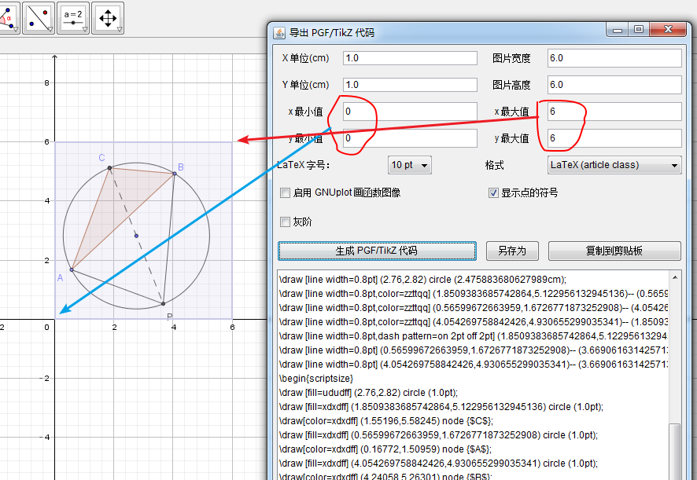

截图/导出
- 手工画图, 然后导出pgf/tikz, 再放到
standalone.tex中生成pdf插入到.tex中去:- 把坐标系放大, 正常情况下$4\times 4$正好;
- 图画好后, 将图放在第一象限, 最好贴着坐标轴, 理由在下一步;
- 在导出pgf/tizk代码时, 在对话框中填入$x_{\min},y_{\min}, x_{\max},y_{\max}$, 生成pgf/tikz代码;
- documentclass选择为standalone, 拷贝代码, xelatex生成pdf. 
画坐标系(箭头)
有时候, 我们不需要那么大的坐标系, 而是恰好大小的坐标系, 比如在$4\times 4$中, 不顶格的坐标轴的箭头
杂项
- 高级选项中的任何修改, 都要返回上级菜单, 选择"保存设置".